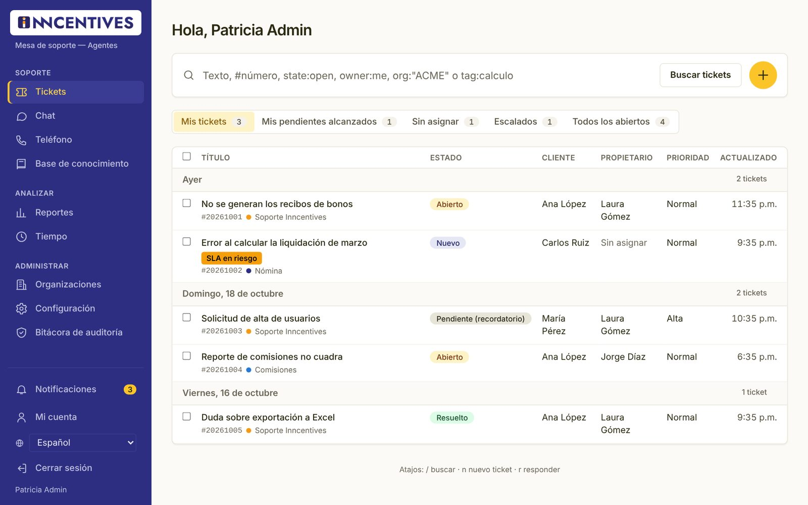
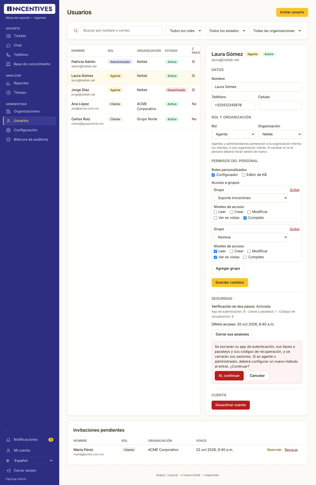
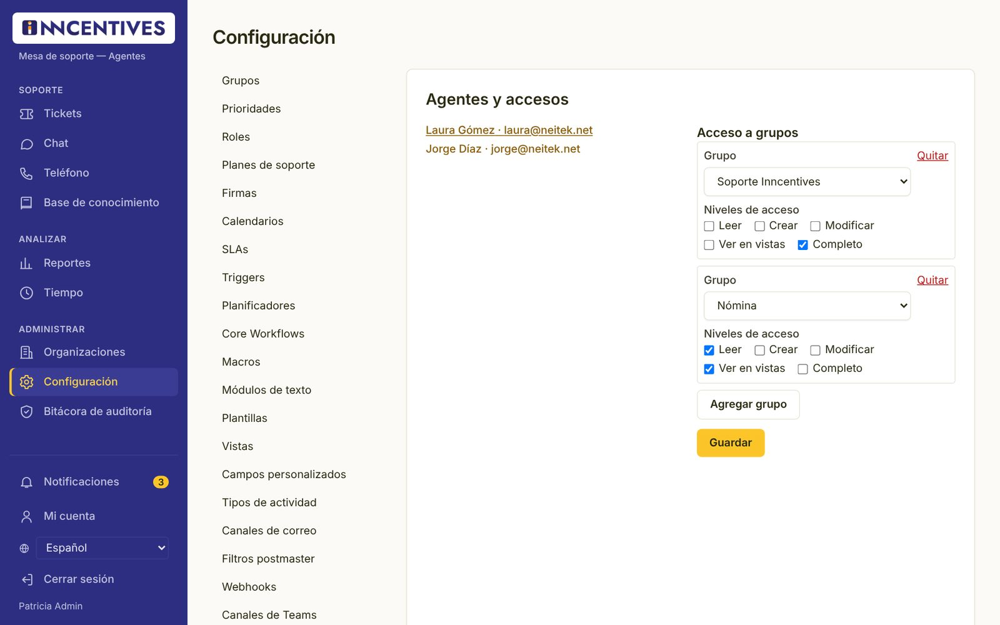
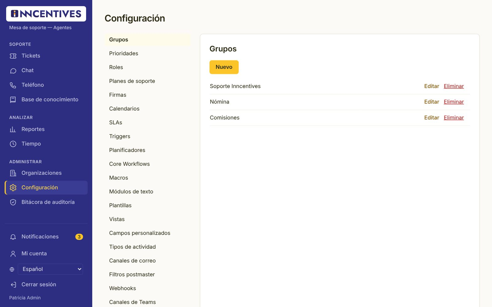
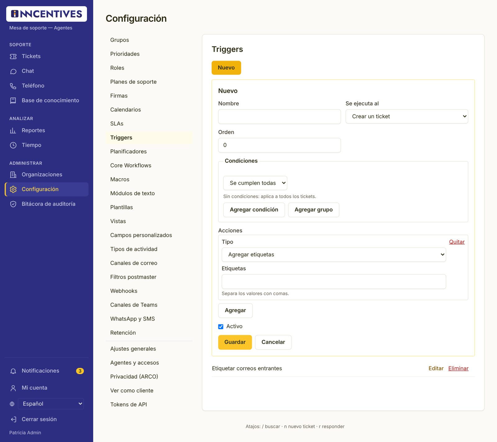
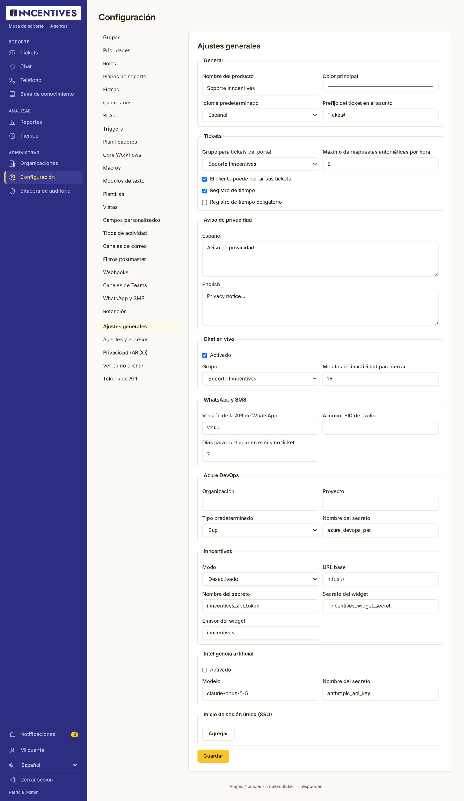
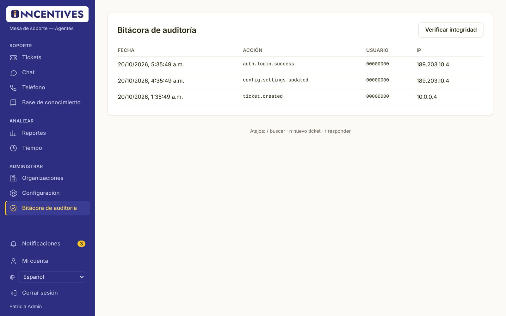

Manual del administrador
Cómo administrar la mesa de soporte: organizaciones, usuarios y accesos, catálogos y reglas, ajustes generales, base de conocimiento y cumplimiento.
01Tu rol
El administrador hace todo lo que hace un agente y, además, configura la mesa de soporte.
Para el trabajo diario con tickets, chat, teléfono y reportes, consulta el Manual del agente. Este manual cubre lo exclusivo del administrador.

| Función | Administrador | Agente | Cliente |
|---|---|---|---|
| Tickets | Todos sus grupos | Sus grupos | Propios (y de su organización si se le permite) |
| Reportes y Tiempo | Sí | Sí | No |
| Editar la base de conocimiento | Sí | No* | No |
| Crear organizaciones | Sí | No | No |
| Invitar usuarios | Cualquier rol | Solo clientes | No |
| Editar usuarios, cambiar su rol y restablecer su verificación | Sí | Solo consultar clientes | No |
| Configuración | Completa | Solo Tokens de API* | No |
| Bitácora de auditoría | Sí | No* | No |
| Privacidad (ARCO) y Ver como cliente | Sí | No* | No |
* Se puede conceder a un agente con un rol personalizado (Configuración → Roles).
La verificación en dos pasos es obligatoria para administradores. Las acciones delicadas (ajustes generales, privacidad, ver como cliente, tokens) pueden pedirte confirmar tu contraseña.
02Organizaciones y usuarios
Cada cliente pertenece a una organización; los correos de sus dominios se asocian a ella.

Crear una organización
- Abre Organizaciones.
- Escribe el Nombre y los Dominios (separados por coma), por ejemplo
acme.com.mx, acme.mx. - Pulsa Crear.
- Si el cliente usa Inncentives, captura su clave de Inncentives en la columna Integraciones y pulsa Guardar. Marca IA solo si la organización autorizó el asistente de IA.
Invitar usuarios
En Invitar usuario elige el Rol (Cliente, Agente o Administrador) y la organización. El personal de Neitek debe pertenecer a la organización interna.
Importación masiva por CSV
- Organizaciones: columnas nombre, dominios (separados por
|), plan y mfa. - Usuarios: correo, nombre, organizacion y rol. Cada uno recibe su invitación.
Primero pulsa Validar (sin guardar); el botón Importar se habilita solo cuando no hay errores. Si hay errores, no se guarda nada.
03Usuarios
Consulta y edita a cualquier persona: datos, rol, organización, permisos, estado y seguridad.

Buscar
Abre Usuarios en el menú Administrar. Busca por nombre o correo y filtra por rol, estado u organización. Pulsa el nombre de una persona para abrir su ficha. Los agentes también ven esta página, pero solo con los clientes y sin poder editarlos.
Editar la ficha
- En Datos corrige el nombre, el teléfono o el celular.
- En Rol y organización cambia el Rol (Administrador, Agente o Cliente) y la Organización. La lista solo ofrece organizaciones válidas para el rol: el personal pertenece a la organización interna y los clientes a una organización cliente.
- Para un cliente, marca si Puede ver los tickets de toda su organización y sus Organizaciones adicionales.
- Para un agente o administrador, asigna Roles personalizados y su Acceso a grupos (niveles en el capítulo siguiente).
- Pulsa Guardar cambios y confirma tu contraseña si se te pide.
La persona debe iniciar sesión de nuevo. Si pasa a Cliente pierde sus accesos a grupos, roles personalizados y tokens de API. No puedes cambiar tu propio rol, estado u organización, y la mesa nunca se queda sin un administrador activo.
Desactivar o reactivar
En Cuenta, Desactivar cuenta impide que la persona entre y cierra sus sesiones; sus tickets e historial se conservan. Reactivar cuenta la habilita de nuevo.
Seguridad
- Cerrar sus sesiones: la saca de todos los dispositivos.
- Restablecer verificación en dos pasos: para quien perdió su teléfono o su llave. Borra su app de autenticación, sus llaves o passkeys y sus códigos de recuperación, y cierra sus sesiones. Si es agente o administrador, deberá configurar un nuevo método al entrar. Pide confirmación y tu contraseña, y queda en la bitácora.
Confirma la identidad de la persona por otro medio (por ejemplo, una llamada a su número registrado). Quien restablece la verificación de otro le da acceso solo con su contraseña.
Invitaciones pendientes
Al final de la página están las invitaciones que nadie ha aceptado. Reenviar manda un enlace nuevo (el anterior deja de servir) y Revocar la cancela. Las vencidas se marcan como Vencida.
04Agentes y accesos a grupos
Define qué grupos ve cada agente y qué puede hacer en ellos.
El acceso a grupos se edita en la ficha del usuario (Usuarios) o en Configuración → Agentes y accesos; ambos guardan lo mismo.

- Abre Configuración → Agentes y accesos y elige al agente.
- Pulsa Agregar grupo, elige el Grupo y marca los niveles.
- Pulsa Guardar.
| Nivel | Permite |
|---|---|
| Leer | Abrir y consultar los tickets del grupo. |
| Crear | Crear tickets en el grupo. |
| Modificar | Responder y cambiar datos de los tickets. |
| Ver en vistas | Que los tickets del grupo aparezcan en sus vistas. |
| Completo | Todo lo anterior. |
05Configuración de la mesa
Cada pestaña administra un catálogo con los botones Nuevo, Editar y Eliminar.

Cómo se usa cada pestaña
- Elige la pestaña. Verás la lista de registros; los inactivos se marcan con ✕.
- Pulsa Nuevo o Editar. Se abre un formulario con los campos del registro.
- Pulsa Guardar. Si algo puede causar un efecto no deseado (por ejemplo, una regla que se dispara a sí misma), verás «Advertencias: …».
Orden recomendado para la puesta en marcha
- Calendarios → Grupos → Prioridades.
- Campos personalizados y Core Workflows (qué se pide al crear un ticket).
- SLAs y Planes de soporte.
- Vistas, Triggers y Planificadores.
- Macros, Módulos de texto, Plantillas y Firmas.
- Canales: Canales de correo, Filtros postmaster, WhatsApp y SMS, Canales de Teams y Webhooks.
- Tipos de actividad y Retención.
Pestañas
| Pestaña | Qué configuras |
|---|---|
| Grupos | Colas de trabajo: correo del grupo, firma, qué pasa con una respuesta a un ticket cerrado (reabrir o crear uno nuevo) y asignación automática. |
| Prioridades | Nombre, orden (1 = más alta) y cuál es la predeterminada. |
| Roles | Roles personalizados que suman permisos al personal (nunca a clientes). |
| Planes de soporte | Minutos incluidos al mes y tarifa por hora en MXN. |
| Firmas | Texto de firma de los correos, con variables como {{agent.name}}. |
| Calendarios | Zona horaria, horario laboral por día, días inhábiles propios y descansos obligatorios de la LFT. |
| SLAs | A qué tickets aplica, calendario, pausa en pendiente, aviso al llegar a cierto % y tiempos de primera respuesta, actualización y solución por prioridad. |
| Triggers | Reglas que se ejecutan al crear o actualizar un ticket. |
| Planificadores | Reglas que se ejecutan cada cierto tiempo (mínimo 10 minutos) sobre los tickets que cumplen las condiciones. |
| Core Workflows | Por pantalla (alta o edición, agente o cliente): qué campos se ven, son obligatorios o de solo lectura, sus valores permitidos y su valor inicial. |
| Macros | Conjuntos de acciones de un clic, limitados a ciertos grupos. |
| Módulos de texto | Textos que los agentes insertan con ::atajo. |
| Plantillas | Valores precargados para tickets nuevos. |
| Vistas | Pestañas de la lista de tickets: condiciones, columnas, orden y para qué roles. |
| Campos personalizados | Campos de ticket, usuario u organización: tipo, opciones, obligatoriedad y si el cliente los ve o edita. |
| Tipos de actividad | Catálogo para el registro de tiempo. |
| Canales de correo | Buzones de Microsoft 365 (Graph) o IMAP/SMTP que se convierten en tickets. |
| Filtros postmaster | Reglas por encabezado del correo: ignorar, marcar como spam o asignar grupo, prioridad y etiquetas. |
| Webhooks | Llamadas a sistemas externos; incluye el registro de Entregas. |
| Canales de Teams | Avisos a canales de Microsoft Teams por evento; incluye Entregas. |
| WhatsApp y SMS | Números de WhatsApp Business o Twilio y el grupo que los atiende. |
| Retención | Cuántos días se conserva cada tipo de dato (solo se editan; no se crean ni eliminan). |
06Reglas: condiciones y acciones
Triggers, planificadores, SLAs, vistas y Core Workflows comparten el mismo editor de condiciones.

Condiciones
- Elige Se cumplen todas o Se cumple alguna.
- Agregar condición crea una fila con Campo, Operador y Valor. El valor se adapta al campo: lista de estados, grupos o agentes por nombre, etiquetas, fecha o minutos relativos («-60» = hace una hora).
- Agregar grupo anida condiciones (por ejemplo, «canal es correo» Y («prioridad es Alta» O «organización es ACME»)).
- Sin condiciones, la regla aplica a todos los tickets.
Cada tipo de regla solo ofrece los campos y operadores que puede usar. Por ejemplo, «cambió» y «cambió a» solo existen en triggers.
Acciones
| Acción | Uso típico |
|---|---|
| Cambiar un campo | Estado, prioridad, grupo, propietario o «pendiente por (minutos)». |
| Cambiar un campo personalizado | Por ejemplo, fijar el módulo. |
| Agregar / Quitar etiquetas | Clasificar automáticamente. |
| Enviar notificación | Al propietario, al grupo, a los suscriptores, al cliente o a agentes específicos. |
| Agregar nota interna | Dejar contexto en el ticket. |
| Llamar un webhook | Avisar a otro sistema. |
| Responder al cliente | Acuse de recibo o recordatorio. |
En notificaciones y respuestas puedes usar variables como {{ticket.number}}, {{customer.name}} u {{agent.name}}.
Trigger «Etiquetar correos entrantes»: se ejecuta al Crear un ticket, con la condición Canal es Correo y la acción Agregar etiquetas: correo.
07Ajustes generales
Parámetros globales de la mesa de soporte.

| Sección | Ajustes |
|---|---|
| General | Nombre del producto, color principal, idioma predeterminado y prefijo del ticket en el asunto. |
| Tickets | Grupo para tickets del portal, máximo de respuestas automáticas por hora, si el cliente puede cerrar sus tickets y el registro de tiempo (y si es obligatorio). |
| Aviso de privacidad | Texto en español e inglés que se muestra al crear un ticket en el portal. |
| Chat en vivo | Activado, grupo que atiende y minutos de inactividad para cerrar (2 a 240). |
| WhatsApp y SMS | Versión de la API de WhatsApp, Account SID de Twilio y días para continuar en el mismo ticket. |
| Azure DevOps | Organización, proyecto, tipo de work item y nombre del secreto. |
| Inncentives | Modo (Desactivado, Demostración o Conectado), URL base y datos del widget. |
| Inteligencia artificial | Activado y modelo. Además, cada organización debe tener su casilla IA marcada. |
| Inicio de sesión único (SSO) | Hasta 5 proveedores (por ejemplo, Microsoft Entra ID): identificador, área, issuer, client ID, secreto, scopes y si se confía en su MFA. |
Los campos «Nombre del secreto» guardan el nombre de un secreto en el resguardo de OCI Vault, nunca la contraseña o el token. Los valores reales los carga el equipo de infraestructura.
08Base de conocimiento: edición
Crea artículos en borrador, tradúcelos y publícalos.
- En Base de conocimiento pulsa Nueva respuesta.
- Elige la Categoría, escribe el Título y el Mensaje. Marca Solo para agentes (interna) si no debe verla el cliente.
- Pulsa Guardar como borrador. Se crea en el idioma que tengas seleccionado.
- Abre el artículo. Con Agregar traducción escribe la versión en el otro idioma.
- Pulsa Publicar. Si quieres programarlo, usa Publicar a partir de.
También puedes Archivar un artículo, cambiarlo con Hacer interna / Hacer visible a clientes y consultar las Versiones anteriores.
09Seguridad y cumplimiento
Herramientas para auditoría, derechos ARCO y soporte asistido.
Bitácora de auditoría

Muestra los últimos registros con fecha, acción, usuario e IP (inicios de sesión, cambios de configuración, accesos a datos). Pulsa Verificar integridad para comprobar que ningún registro fue alterado; el resultado es «Integridad verificada: N registros sin alteraciones».
Privacidad (ARCO)
- En Configuración → Privacidad (ARCO) captura el ID de usuario, la Acción (export = exportar sus datos, anonymize = anonimizar, delete = eliminar) y el Motivo.
- Pulsa Iniciar y confirma tu contraseña.
- Cuando una exportación termine, usa Descargar para entregarla al titular.
Ver como cliente
Para revisar exactamente lo que ve un cliente, en Ver como cliente captura su ID de usuario y un motivo y pulsa Iniciar. La sesión es de solo lectura, vence sola y queda registrada en la bitácora.
Tokens de API
Crea tokens para integraciones con nombre, permisos y vigencia. El token se muestra una sola vez; revócalo con Eliminar cuando ya no se use.
Lo que hoy no se hace desde pantalla
Crear o renombrar categorías de la base de conocimiento. Para eso, solicita apoyo al equipo técnico de Neitek.